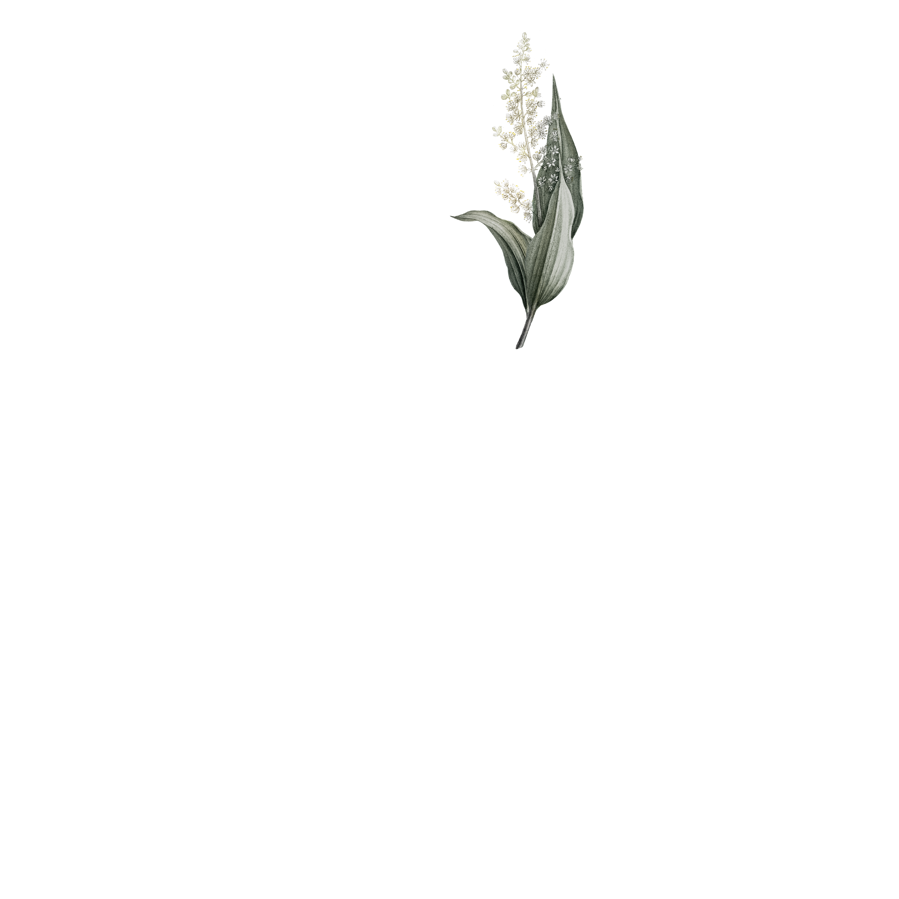

Please switch to landscape view.
And there you have it, you’ve pretty much met Dea.
As you can probably tell she’s not only a talented and passionate musician,
but also a warm and cheerful person who is a joy to be around.
When I met Dea that day I was surprised how welcoming she was after only a few
exchanged E-Mails. But let’s delve into who Dea really is.

At first we talked about her recording process:
"I've been making my own music since around 2010, I guess that's when I wrote my first
real song. But I only really started recording around 2015.
For my album I recorded everything in my living room, and my mom’s living room." she laughs
"I actually invited some of my friends over and we’d just hang out and record.”
"I had no pressure to finish stuff fast in this
environment.” Dea says about how the recording affected the album
“I could get up and first thing in the morning start recording, maybe
get some food, maybe not.” she laughs “So the whole process was very organic,
which I think is reflected in the Album”

“I always knew I was very interested in music,
I could play a little bit of piano and some chords on the guitar,
as well as some singing.
“Since I was five I have been going to this camp
which focuses on African drumming and singing culture. When you’re at that age you’re
very open to things and they sort of stick with you.” on why she decided to focus on
percussion “Later on in life I went to Cuba and West Africa to discover myself,
the traditions and cultures really inspired me, and still do to this day.”
“Making music and performing music really helps me
through my personal journey, it teaches me a lot about others and myself.”
she said about who she makes music for “But if the music was only about me, it would be
too thin you know? It would lack substance. So I try to make sure to do it in a way
that others can get something out of it too.”
“Can you picture yourself doing something other
than music?” I asked “Yeah, I think if I had to I could.” she said after some
hesitation ”But in the long term, music is what’s going to make me the happiest.
It really feels like I’m doing what I have to do in this life”
